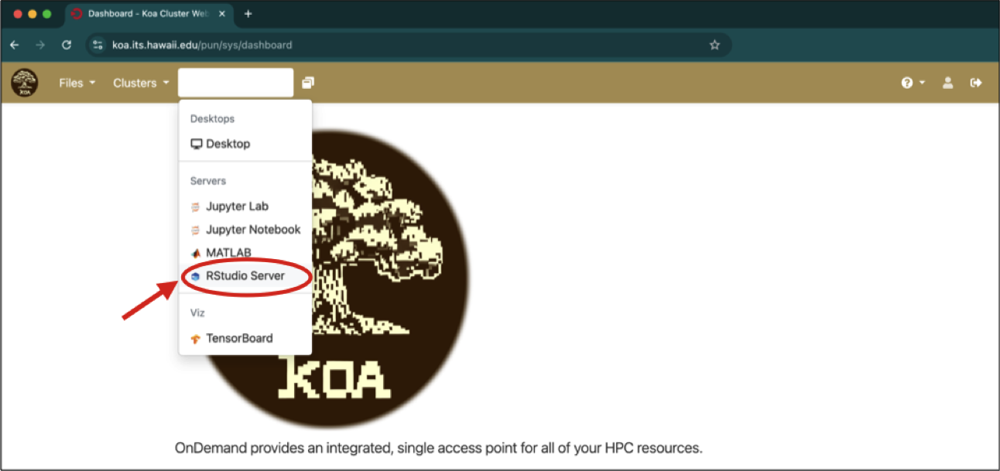
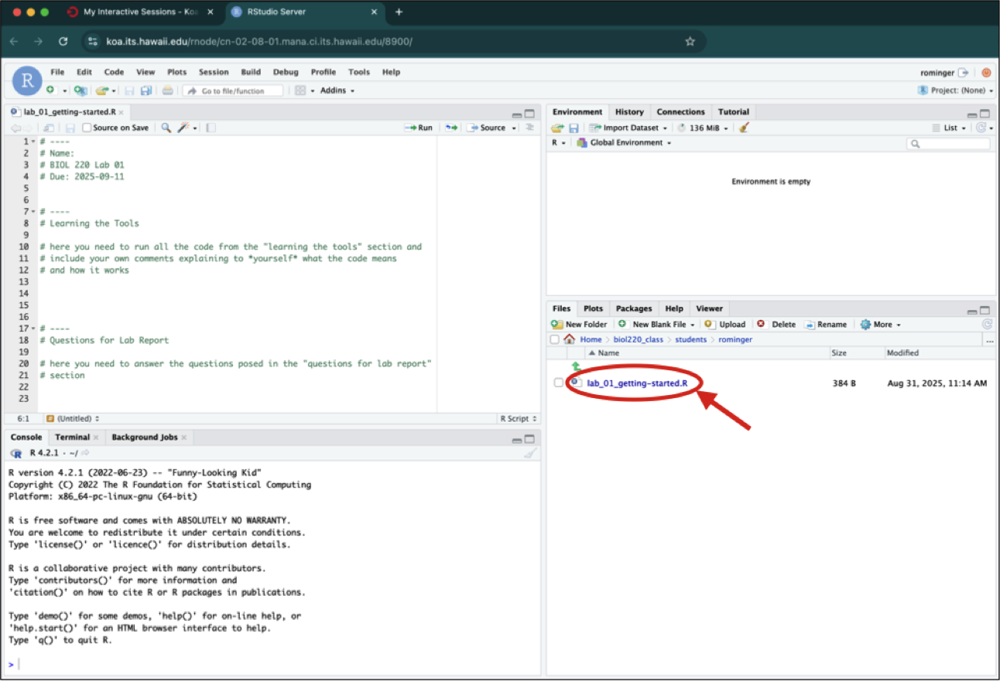

Labs for Intro Biostatistics
Setup
Software and Cloud Services
All labs will use R, RStudio, and the Koa Server operated by UH Mānoa.
R is a computer program that allows an extraordinary range of statistical calculations. It is a free program, mainly written by volunteer contributors from around the world.
RStudio is a separate program, also free, that allows you to easily organize separate tabs for R code files, graphics, help docs, and more.
For this course, you won’t need R and RStudio installed on your own device because we will work on the Koa Server. However, if you wish to install them on your device, go to https://rstudio.com/products/rstudio/download/ for instructions about getting set up.
Using the Koa Server
The Koa Server allows us to run R and RStudio remotely on the servers maintained by UH. Each student has a dedicated folder where all labs (and problem sets) will be posted.
To log into the Koa Server visit this url: koa.its.hawaii.edu.
When prompted, login with your UH credentials. Once you are logged in, you will see this landing page:
Click on the “Interactive Apps” drop-down menu and select RStudio Server

This will open up a form where you can select different options for your session working on the Koa Server. Leave all the defaults as is except
- enter a reasonable number of hours from 1–4 depending on how long you plan to work in one continuous sitting (if you keep working past the number of hours you entered your session will end, but not to worry, you can just restart it and you won’t lose any work)
- enter 8 GB of RAM (after you set this as 8 the first time, you might not need to re-set it)
Once you have made your selection for hours and RAM, hit “Launch.”
You will have to wait a few seconds for your session to become active. Once it’s ready you will see a button “Connect to RStudio Server.” Click that button and you will be taken to your RStudio session.
RStudio is arranged into several panels, each with its own purpose. You will learn all about these in “Lab 01: Getting started”. For now, we need to know that the bottom right panel is how we access files and folders on the server. Click on the folder named for our class “biol220_class.”

Then click “students”
And finally click on the folder named the same as your UH username
Now the bottom right panel will show you all your lab (and problem set) assignments. As assignments are posted they will appear inside your folder. As an example, check out the “lab_01_getting-started.R” assignment. Clicking on that file will open an R script where you will complete the assignment.

You’ll see that the file opens in the top left panel.